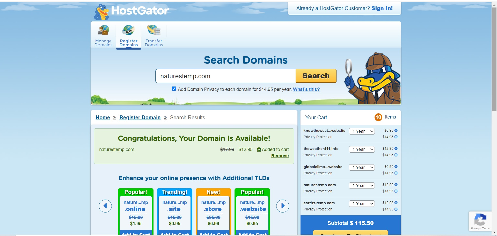
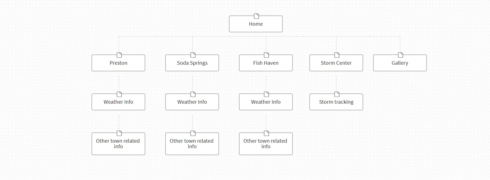

Site Name
Naturestemp.com is an available domain website. The site name is adapted from thinking about the
nature and outdoors and what the temperature is. Naturestemp.com is a quick website to remember and
easy to access.

Site Purpose
The purpose of this site is so individuals can access information on the current weather and the
weather forecast for the next two weeks. The main goal is to focus on three towns and give them thier
current weather conditions and forecast for the upcoming days. The site will have a gallery for vewing
weather images, a storm tracker and offers town news and information.
Site Map
